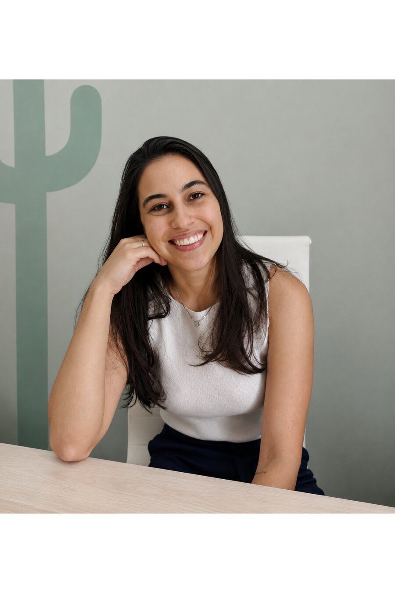

Psicóloga & Neuropsicóloga
Atendimento psicológico e avaliação neuropsicológica para crianças, adolescentes e adultos — com acolhimento, escuta individualizada e estratégias baseadas em evidências.

Sobre o atendimento
Cada pessoa carrega uma história única — e é a partir dela que a escuta acontece.
O trabalho é pautado no acolhimento e na escuta individualizada, unindo sensibilidade clínica a estratégias baseadas em evidências. Cada processo é pensado de acordo com as necessidades, características e particularidades de quem chega para ser ouvido.
Como funciona o atendimento
Atendimento infantojuvenil pela abordagem da Terapia Cognitivo-Comportamental (TCC), considerando as necessidades, características e particularidades de cada criança e adolescente.
Avaliação de crianças, adolescentes e adultos, investigando aspectos cognitivos, emocionais e comportamentais, com o objetivo de compreender o funcionamento individual e contribuir para um planejamento de intervenções mais direcionado.
Onde acontece
Um espaço pensado para receber crianças, adolescentes e adultos com conforto e privacidade.
Vamos conversar?
Tire suas dúvidas sobre o atendimento ou agende uma consulta diretamente pelo WhatsApp.
Falar no WhatsApp